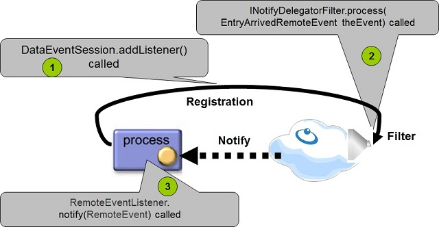

The session messaging API allows for space-side notify filtering. To control the events delivered to the client, implement the INotifyDelegatorFilter interface, pass the object implementing the INotifyDelegatorFilter, and return a false value from the INotifyDelegatorFilter.process for events you do not want to be sent to the registered client.

The INotifyDelegatorFilter allows you to execute business logic at the space side before the event is delivered to the client. The INotifyDelegatorFilter might prevent a specific event from being delivered to the client registered for the matching event, by returning false from the process method.
The INotifyDelegatorFilter interface includes the following methods:
public interface INotifyDelegatorFilter extends Serializable
{
// called when the filter created
public void init( IJSpace space, Object notifyTemplate );
// called before the event delivered to the client. Returning false will not
// deliver the event to the client
public boolean process( EntryArrivedRemoteEvent theEvent);
// called when the registration cancelled
public void close();
}
Below is an example for the INotifyDelegatorFilter implementation, where the process() method allows only messages with the value aaa to be delivered to the client:
package com.j_spaces.examples.sessionevent;
import net.jini.core.entry.Entry;
import net.jini.core.entry.UnusableEntryException;
import com.j_spaces.core.IJSpace;
import com.j_spaces.core.client.EntryArrivedRemoteEvent;
import com.j_spaces.core.client.INotifyDelegatorFilter;
public class MyNotifyFilter implements INotifyDelegatorFilter
{
public void init(IJSpace space, Object entry)
{
System.out.println(" ->> Init called - Registration Template:"+entry);
}
// only messages with m_string = aaa will be delivered to the registered client
public boolean process(EntryArrivedRemoteEvent theEvent)
{
EntryArrivedRemoteEvent arrivedRemoteEvent = (EntryArrivedRemoteEvent) theEvent;
MyData msg;
try {
msg = (MyData) arrivedRemoteEvent.getObject();
int notifyType = arrivedRemoteEvent.getNotifyType();
String msgStr = " ->> process called - Type:" + DataSessionEventExample.getNotifyDesc(notifyType)+" - Data:" + msg ;
System.out.println(msgStr);
return (msg.m_string.equals("aaa"));
} catch (UnusableEntryException e) {
e.printStackTrace();
}
return false;
}
public void close()
{
System.out.println(" ->> closed called");
}
}
The notify registration:
EventSessionConfig config = new EventSessionConfig();
DataEventSession session = space.newDataEventSession(config);
MyNotifyFilter filter = new MyNotifyFilter ();
EventRegistration registration = session.addListener(new MyData(),this,Lease.FOREVER,null,filter);
When writing the following objects, only msg1 is delivered to the client who registered for notifications:
MyData msg1 = new MyData("aaa", new Long (100 ) , new Time(10,5,20) ,
new Date (107, 10, 40),new Integer (60 ) ,new Double (500.2));
MyData msg2 = new MyData("bbb", new Long (100 ) , new Time(10,5,20) ,
new Date (107, 10, 40),new Integer (60 ) ,new Double (500.2));
space.write(msg1, null, Lease.FOREVER);
space.write(msg2, null, Lease.FOREVER);
The INotifyDelegatorFilter implementation class should be part of the space classpath.